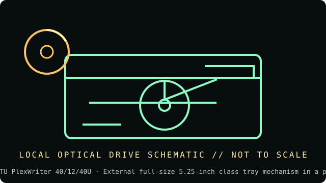

[ INDIVIDUAL COMPONENT // OPTICAL DRIVES ]
Plextor PX-W4012TU PlexWriter 40/12/40U
External USB CD-R/RW drive in an enclosed desktop mechanism; do not confuse it with the internal PX-W4012A. Specifications below are tied to the exact model identifiers and cited documentation; nearby product families may differ.

IDENTIFICATION: Plextor PX-W4012TU PlexWriter 40/12/40U · confirm full model/revision marking and compare it with the cited source before assigning a host or media capability.
Verified specifications
| Catalog subcategory | CD-R and CD-RW drives |
|---|---|
| Exact product identifier | Plextor PX-W4012TU PlexWriter 40/12/40U |
| Era / product type | External USB 2.0 CD-R/RW recorder |
| Read/write and media | CD-R write up to 40×; CD-RW rewrite up to 12×; CD-ROM read up to 40×; BURN-Proof and Plextor recording features. |
| Interface and mechanics | External full-size 5.25-inch class tray mechanism in a powered enclosure; USB 2.0 host interface. Exact bundled cable, AC adapter, and dimensions can vary by regional kit; identify the rear label/adapter. |
| Variant and host cautions | Requires the external PX-W4012TU model and its compatible power supply; do not assume USB bus power. Legacy burning software/OS support can be limiting. The PX-W4012A is an internal PATA model with different connections. |
Optical-media preservation notes
When writing for preservation, retain the disc type, media manufacturer, software/version, chosen speed, session layout, and readback checksum. Optical writes are not a substitute for multiple independent copies and fixity checks.
- Handle discs by the edge or center hub; do not write on the data side or add adhesive labels over the recording surface.
- Store in a clean, cool, dry, dark environment in protective cases. Keep original media unmodified and make verified working images for access.
- Retain checksums, drive model/firmware, software, read errors, media type, and acquisition/handling history with each preservation image.
Identification and host checks
- Confirm the complete manufacturer label, model suffix, revision, serial/date code, and supplied bezel, cable, adapter, or bracket before installation.
- Requires the external PX-W4012TU model and its compatible power supply; do not assume USB bus power. Legacy burning software/OS support can be limiting. The PX-W4012A is an internal PATA model with different connections.
- When writing for preservation, retain the disc type, media manufacturer, software/version, chosen speed, session layout, and readback checksum. Optical writes are not a substitute for multiple independent copies and fixity checks.
Manufacturer, standards and preservation sources
- Plextor — PX-W4012TU installation and user manualModel-specific setup, USB connection and recording specifications.
- NEDCC — Care and handling of CDs and DVDsOptical-media preservation guidance.
- NIST — Care and handling of CDs and DVDs: Guide for librarians and archivistsPreservation practice for optical discs; follow applicable media-specific guidance and keep redundant verified copies.
- Library of Congress — Sustainability of Digital FormatsFormat-sustainability reference for planning access, preservation, and migration of digital content.
Manufacturer ratings describe supported media and maximum speeds, not guaranteed read quality from a particular aged disc. Standards and preservation guidance do not certify this drive or a media batch.